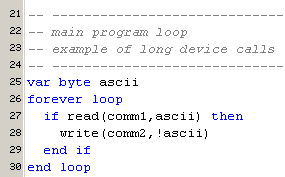
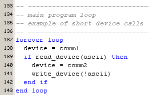
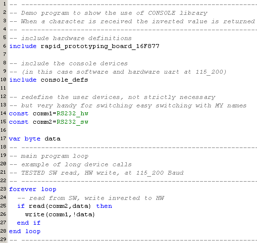
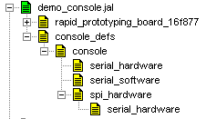
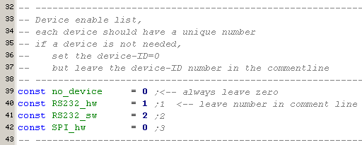
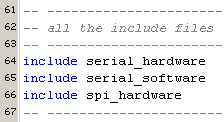
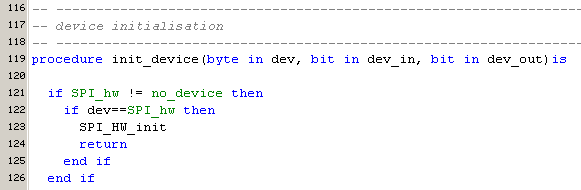
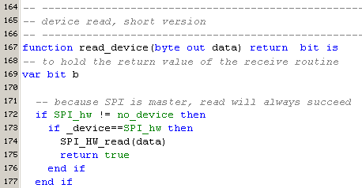
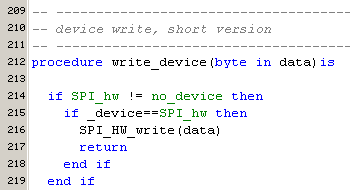

january 2006
JAL Console Library
Introduction
The console library is intended to give a read / write interface, for a byte value, for all kind of devices, all with a equal user interface. Whether you've a RS232 port, an I2C memory or an Ultrasonic Ranger, for each device you can use the same procedure to read or write the data. This makes is very easy to exchange devices, without modifying the code.
This library is more meant as an example, which you should addept to your set of devices.
Procedures
There are 2 sets of read / write procedures, the long ones, in which you specify the selected device in each call

and the short set, in which you set the device, prior to using (another) device.

The long calls, have more overhead but result in shorter and more readible code. The short calls, results in less code space, especially when you repeatedly using the same device.
The variable "device" can be a pseudo variable, so it's possible to put also some initialisation code "behind" this variable.
The provided example library console, contains 2 devices, a serial hardware port and a serial software port, both on the same IO-pins. In this case, setting a value to device also initializes the correct settings for hardware or software uart. The library was tested and worked well, with software and hardware communication in all kinds of constructions at 115_200 Baud.
Here an example of a total main program, which reads data form the hardware uart and sends the inverted data through a software uart on the same pins as the hardware uart.

here the procedure dependancy is shown.
Console_defs(containing the user definitions) is placed higher the real console library console, because some people prefer to put all their settings in a separate file or even in the main program.

Real Fun
And here the real fun starts, adding your own library for some sequential byte oriented device to the console library. To realize that you've to do the following steps
2. Add unique number for your library
Here you see that the SPI_hw library is added with the unique number 3. The library can be "disabled" by changing this constant temporary into zero. This garantees that the library will not eat any code or time.
Because enabling / disabling is project dependant, I've put these unique numbers in CONSOLE_DEFS.

3. Include the library
There's no way to include the library conditional. But as the compiler is very fast and the code constructs doesn't consume any code if the above constant is set to zero, this seems an acceptable way.

4. Add the initialisation part
Line [121] because the condition is fully based on constants, this works like a compiler directive. Therefor the procedure "init_device" will only step through the "enabled" devices. If this device is enabled, line [124] will ensure that the if-statement of line [122] will work like a case-statement, so the procedure will be exit as soon as a valid device is recognized.

5. Add the read procedure
Again, line [172] works like a compiler directive. If you've a read procedure that returns a boolean value, which indicates if the read was succesfull, you should return this boolean. Also line [175] ensures the if-statement of line [173] works as a case-statement.

6. Add the write procedure
Again, line [214] works like a compiler directive, line [217] ensures case-statement.

7. Add a call to the initialization part
This call is placed in CONSOLE_DEFS, because it's a project choice whether you want input, output or both.